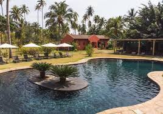
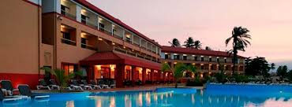
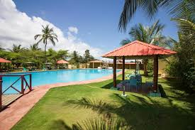
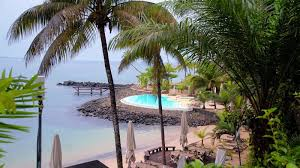

Principais Pontos Turísticos
Explore as maravilhas naturais de São Tomé e Príncipe
Hotéis Recomendados
Acomodações de qualidade para sua estadia perfeita

Omali São Tomé
📍 São Tomé, Zona Norte

Pestana São Tomé
📍 São Tomé, Zona Sul

Hotel Praia
📍 São Tomé, Zona Oeste
Roça São João dos Angolares
📍 São Tomé, Zona Sul

Club Santana Beach & Resort
📍 Santana, Ilha de São Tomé
Um Pouco da História
Conheça a rica história deste arquipélago africano
São Tomé e Príncipe é um pequeno país insular localizado no Golfo da Guiné, na costa da África Central. Descoberto por navegadores portugueses no século XV, tornou-se uma importante colônia para a produção de açúcar, cacau e café.
A independência foi conquistada em 12 de julho de 1975, marcando o início de uma nova era para o país. Hoje, São Tomé e Príncipe é conhecido pela sua biodiversidade única, praias paradisíacas e cultura vibrante.
Século XV
12 de Julho de 1975
Golfo da Guiné